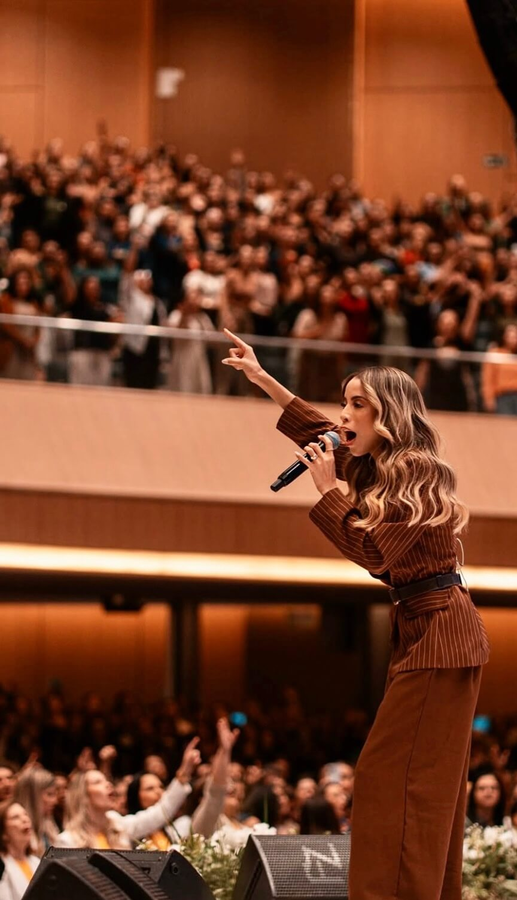

Projeto EP 2026
Fernanda Santos
"Uma voz que atravessa fronteiras"
Sobre o Ministério
Fernanda foi chamada para o ministério com cinco anos de idade e desde muito cedo demonstrou um forte chamado para servir a Deus através da música. Ainda jovem começou a ministrar em igrejas e eventos, destacando-se por sua voz marcante e pela forma como conduz as pessoas à adoração.
Ao longo de sua trajetória passou a viajar por diversos estados do Brasil participando de grandes eventos cristãos, além de ministrar também em países como Alemanha, Inglaterra, Espanha e Estados Unidos.
Em 2021 assinou contrato com a gravadora Graça Music e desde então lançou diversos singles, videoclipes e projetos nas plataformas digitais. Sua carreira já soma dois CDs gravados, diversos lançamentos e milhares de pessoas alcançadas através de sua música e ministério.

Missão e Propósito
A missão do ministério de Fernanda Santos é levar o Evangelho de Jesus Cristo através da música, tocando corações por meio da adoração e da mensagem da graça de Deus.
"Por meio de suas canções, pessoas têm sido restauradas, curadas e profundamente tocadas pelo Espírito Santo."
O ministério de Fernanda tem sido instrumento nas mãos de Deus para que vidas sejam alcançadas, conheçam o nome de Jesus e sejam salvas.
O Projeto Musical
O projeto consiste na produção e gravação de um EP com três canções. A proposta é lançar as músicas nas plataformas digitais e utilizá-las também em igrejas, eventos e ministrações, ampliando o alcance do ministério.
Gravação de EP
Produção e gravação de um EP com três canções inéditas para lançamento nas plataformas digitais e utilização em igrejas e eventos.
Estrutura Profissional
Estrutura completa com produção musical, direção artística, músicos, gravação de áudio/vídeo e iluminação profissional.
Contribuição para Realização
Este valor representa a contribuição necessária para viabilizar toda a produção e gravação do EP. Dentro desse investimento estão incluídos os custos de produção musical, direção artística, preparação dos arranjos e ensaios das músicas, além da participação dos músicos que farão parte da gravação.
O projeto também envolve a estrutura necessária para a gravação, incluindo iluminação profissional, preparação do ambiente, cenário e elementos de decoração que ajudarão a compor o espaço da gravação.
Também está prevista a locação do espaço onde a gravação será realizada, além de toda a montagem da estrutura técnica necessária para que o trabalho aconteça com qualidade. Outros custos contemplados incluem gravação de vídeo, equipe de filmagem, fotografias do projeto, produção visual, logística da equipe, deslocamentos, viagens quando necessário e materiais de divulgação para o lançamento das músicas nas plataformas digitais.